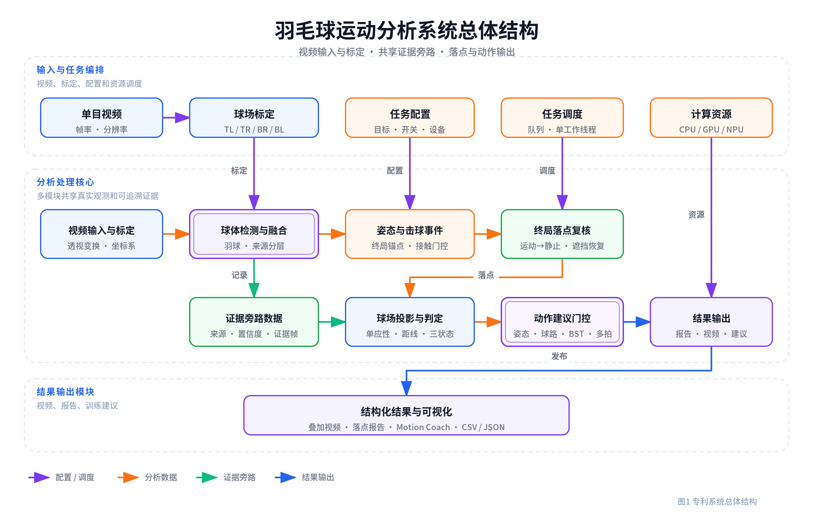
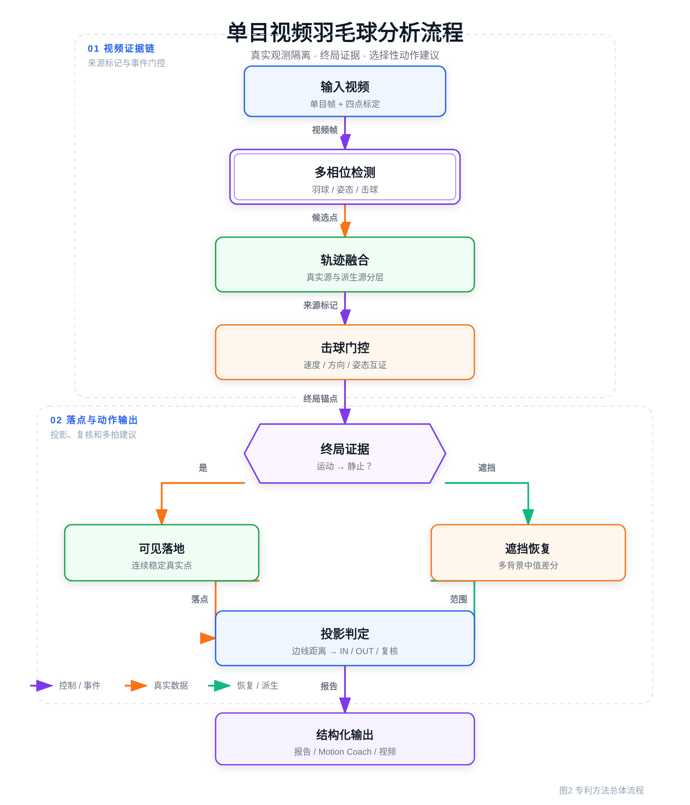
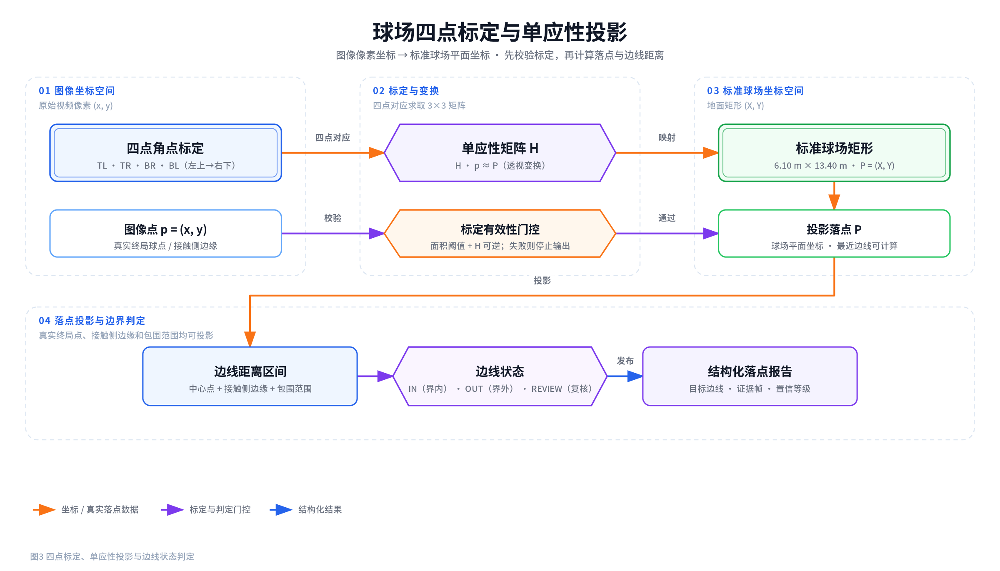
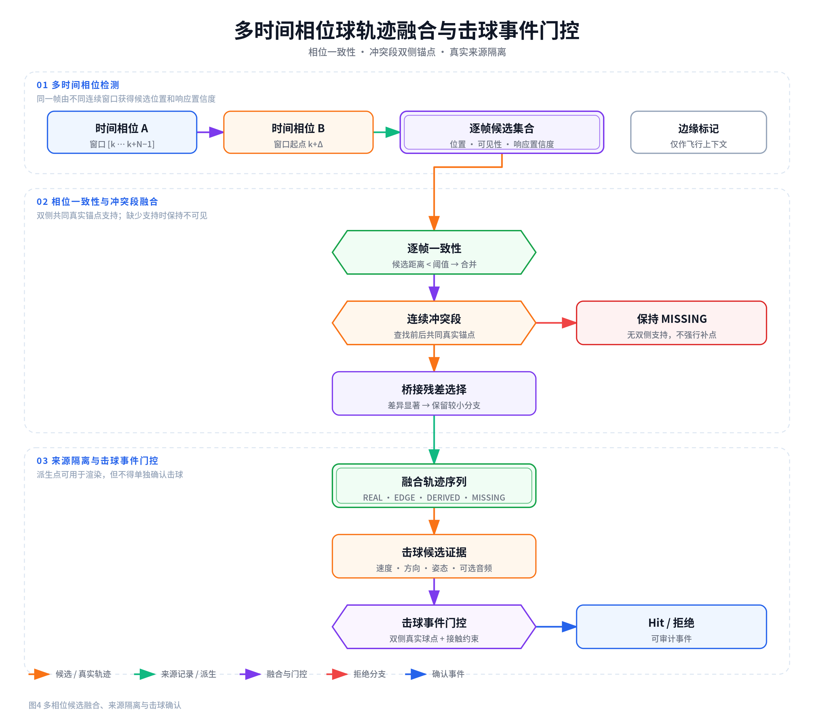
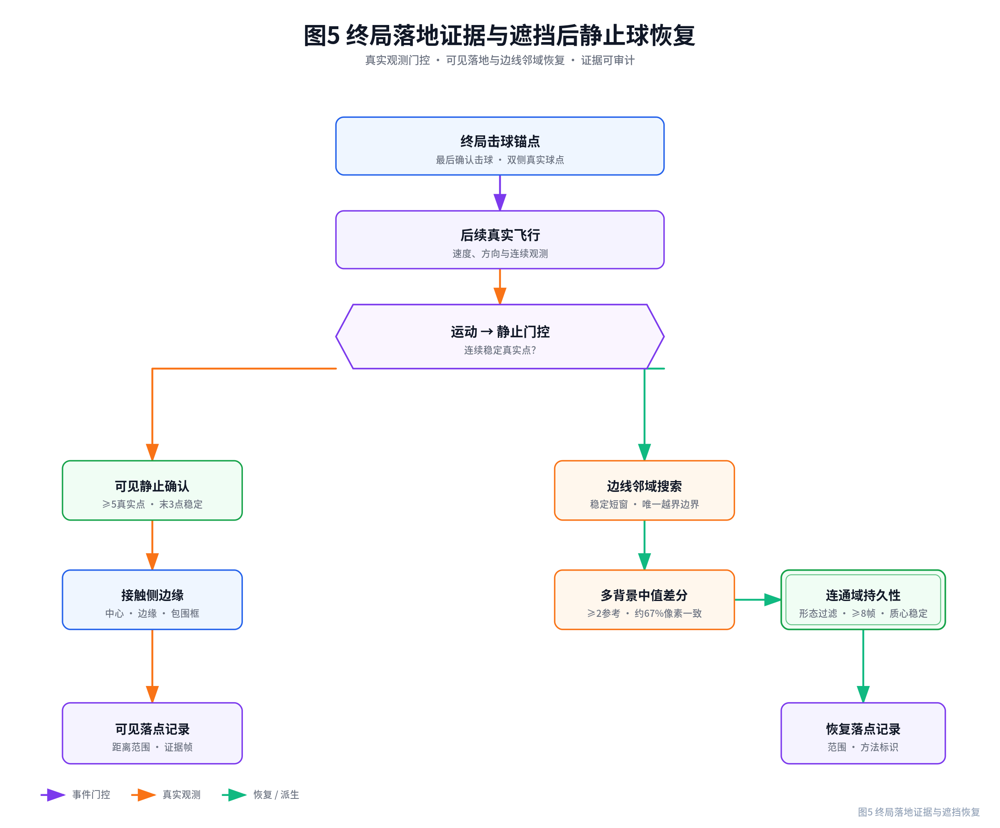
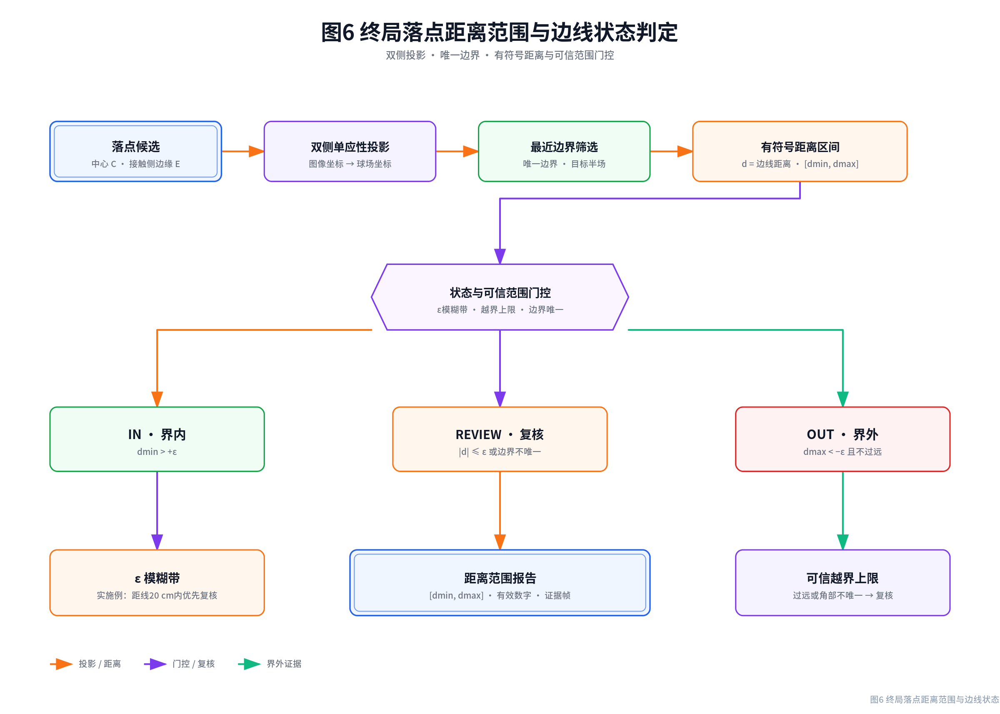
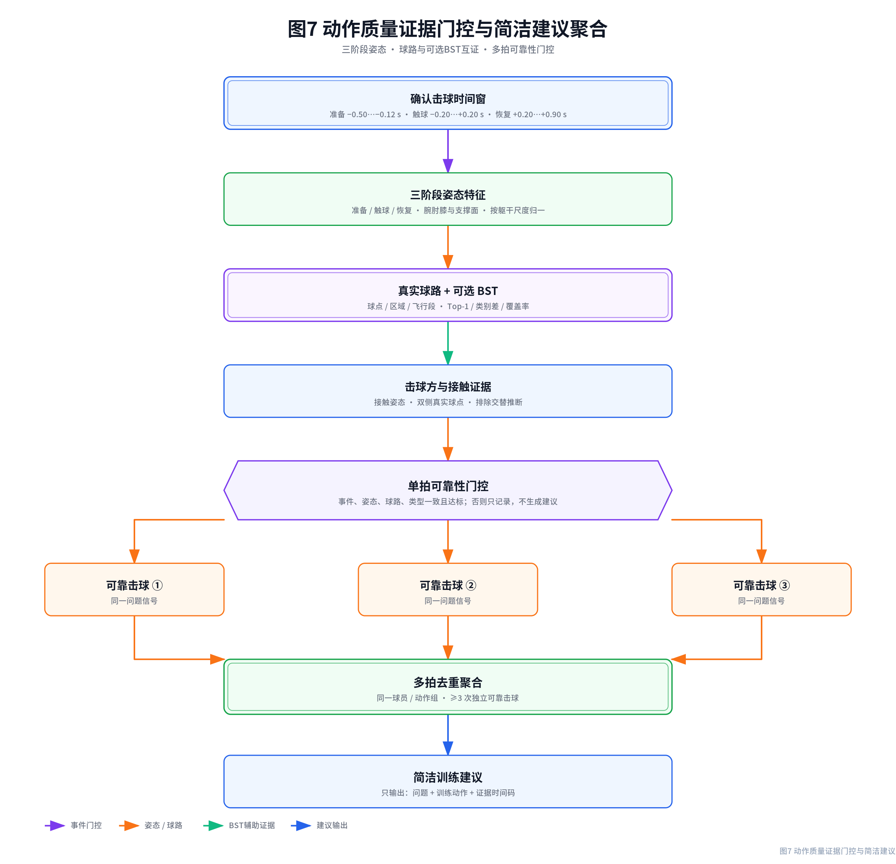
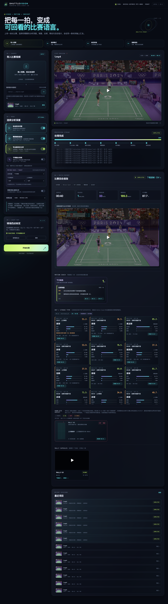

2018102538816.pdf 的章节体例编写，属于专利撰写初稿/技术交底书，不是已提交或已授权的法律文件。申请前应由申请人确认发明人、申请人、优先权、开源许可证、现有技术和公开时间，并由专利代理师进行新颖性检索、单一性审查及权利要求修改。| 项目 | 内容 |
|---|---|
| 发明名称 | 一种基于单目视频多源时空证据融合的羽毛球运动分析与落点判定方法、系统、设备及存储介质 |
| 申请人 | 【待填写】 |
| 发明人 | 【待填写，应按实际创造性贡献列名】 |
| 申请人地址 | 【待填写】 |
| 联系人及联系方式 | 【待填写】 |
| 代理机构及代理师 | 【待填写】 |
| 申请日/优先权日 | 【待填写】 |
一种基于单目视频多源时空证据融合的羽毛球运动分析与落点判定方法、系统、设备及存储介质，属于计算机视觉与体育运动分析技术领域。该方法获取羽毛球视频和球场标定点，检测羽毛球、运动员姿态及击球事件，对球体观测保留帧号、来源和置信度，并将真实观测与插值、预测观测隔离；依据终局击球后的连续运动、速度下降、稳定窗口及未来活动确定落地事件。球体落地后被遮挡时，利用多个击球前背景中值与击球后时序图像提取新出现且连续稳定的紧凑亮目标，以目标接触侧边缘和包围范围经单应性变换获得边线距离区间，输出界内、界外或复核结果。进一步对姿态相位特征、球路特征和可选击球类型结果进行门控，仅在同一动作问题于多个独立可靠击球中重复时输出简洁训练建议。本发明可降低人体误锁、派生轨迹伪落点和低置信动作建议造成的错误输出，提高普通单机位视频在终局遮挡场景下的可复核性。
摘要附图：图2。
1. 一种基于单目视频多源时空证据融合的羽毛球运动分析与落点判定方法，其特征在于，包括以下步骤：
S1，获取包含羽毛球场和至少一名运动员的单目视频、所述单目视频的帧率及分辨率，并获取所述羽毛球场在图像坐标系中的多个标定点；根据所述多个标定点建立图像坐标系与预设球场坐标系之间的透视变换关系；
S2，对所述单目视频的连续视频帧执行羽毛球目标检测、运动员姿态关键点检测和击球事件检测，针对每一球体观测至少保存帧号、图像坐标、可见性、检测来源和检测置信度；将由球体检测器直接获得的球体观测标记为真实观测，将通过插值、状态预测或跨不可见区间补全获得的球体观测标记为派生观测，并依据相邻真实观测之间的帧间隔将球体观测分割为多个连续轨迹段；
S3，根据所述击球事件及所述真实观测确定每一回合的终局击球锚点；对于位于所述终局击球锚点之后且标记为不确定的接触事件，仅在该接触事件之前和之后均存在预设数量的连续真实观测，并且前后真实观测满足预设速度变化条件和方向变化条件时，将该接触事件确定为终止前一飞行段的后续接触事件；
S4，在所述终局击球锚点之后的连续轨迹段中检测由运动状态向静止状态的转换，当连续真实观测的运动速度在到达候选位置前高于第一速度阈值、在所述候选位置之后低于第二速度阈值、所述候选位置之后的多个真实观测处于预设空间散布范围内且后续未出现恢复高速运动时，将所述候选位置确定为可见落地位置；
S5，当所述终局击球锚点之后存在运动轨迹但球体检测器在落地后未输出满足步骤S4的真实观测时，在原始视频中根据终局轨迹及球场边线确定搜索区域；分别根据击球前的多个相互分离的参考帧组生成多个背景中值图像，根据击球后的多个重叠时间窗生成多个后景中值图像；对所述背景中值图像与所述后景中值图像执行亮度差分、颜色约束和连通域提取，筛选新出现的紧凑目标；根据所述紧凑目标在多个视频帧中的持续帧数、帧间允许缺口及质心空间稳定性确定遮挡后静止目标，并根据所述遮挡后静止目标朝向相应球场边线的接触侧边缘及包围范围确定恢复落点范围；
S6，将所述可见落地位置或所述恢复落点范围通过所述透视变换关系映射到所述预设球场坐标系，计算所述可见落地位置或所述恢复落点范围相对于至少一条球场边线的有符号距离；当所述有符号距离位于预设边线模糊带内时输出复核状态，当所述有符号距离位于所述预设边线模糊带的界内侧时输出界内状态，当所述有符号距离位于所述预设边线模糊带的界外侧且满足可信球场范围约束时输出界外状态；
S7，以经确认的击球事件为时间锚点，从所述运动员姿态关键点中提取准备阶段、触球阶段和恢复阶段的尺度归一化姿态时序特征，并将所述姿态时序特征与真实球路特征及可选的击球类型分类结果进行证据门控；按照动作问题类别对多个相互独立且通过证据门控的击球事件进行去重聚合，仅在同一动作问题达到预设重复次数时输出包含问题描述和对应训练动作的训练建议；
S8，生成包含逐帧球体观测来源、击球事件、回合标识、落点判定、证据帧信息和所述训练建议中的至少一种的结构化结果，并通过显示界面或应用程序接口输出所述结构化结果。
2. 根据权利要求1所述的方法，其特征在于，步骤S1中的所述多个标定点为按照图像中左上、右上、右下和左下顺序取得的四个球场角点；所述预设球场坐标系为宽度6.10米、长度13.40米的矩形坐标系；根据所述四个球场角点与所述矩形坐标系中的四个对应点求取3×3单应性矩阵，并在所述四个球场角点构成的多边形面积低于预设面积阈值或所述单应性矩阵不可逆时停止输出落点判定。
3. 根据权利要求1所述的方法，其特征在于，步骤S2包括：以至少两个不同的时间相位向时序球检测模型输入连续视频帧；当不同时间相位在同一帧的候选位置相互接近时融合对应候选位置；当不同时间相位形成连续冲突轨迹段时，根据冲突轨迹段之前和之后的共同真实观测建立双侧桥接轨迹，并选择相对于所述双侧桥接轨迹残差较小的候选位置；当冲突轨迹段缺少双侧真实观测支持时，将相应帧标记为不可见；位于图像边缘的观测仅用于飞行上下文或可视化，不直接用于击球事件确认和落点投影。
4. 根据权利要求1所述的方法，其特征在于，步骤S3中的经确认击球事件同时满足：击球标记有效、事件帧存在、事件未被标记为不确定以及击球时存在真实球体观测；所述不确定接触事件的前侧至少具有两个真实观测、后侧至少具有三个真实观测，连续观测的帧间隔不大于预设帧数，前后速度均高于与标定球场图像尺度相关的阈值，并且满足下列条件中的至少一项：前后速度方向夹角达到预设角度、后侧速度与前侧速度之比高于第一比例阈值、后侧速度与前侧速度之比低于第二比例阈值。
5. 根据权利要求1所述的方法，其特征在于，步骤S4中的连续轨迹段至少包含五个真实观测且持续时间不小于0.16秒；最后至少三个真实观测位于连续视频帧中且最大两两距离小于与标定球场图像尺度相关的稳定阈值；落地前的至少两个速度值高于接近速度阈值，落地后的速度值低于稳定速度阈值，落地前的相邻运动方向满足连续性约束，且落地后的后续轨迹不存在高于复活速度阈值的运动。
6. 根据权利要求1所述的方法，其特征在于，步骤S5中的多个背景中值图像至少由两个相互分离且每组包含至少六帧的参考帧组生成；所述紧凑目标满足预设的灰度增量、亮度下限、饱和度上限、连通域面积、宽度、高度、填充率和长宽比条件；将完全位于球场线带内的连通域排除，并要求保留目标在至少八个视频帧中可见、相邻可见帧的最大间隔不大于两帧且质心标准差不大于预设稳定阈值。
7. 根据权利要求1所述的方法，其特征在于，步骤S6包括：分别投影目标中心、所述接触侧边缘和包围范围角点，选取相对于所述目标唯一的左边线、右边线、远端底线或近端底线作为目标边线；根据各投影点相对于所述目标边线的有符号距离形成距离区间；当所述距离区间与预设边线模糊带相交、所述目标边线不唯一、落点不在击球方的目标半场、落点越出标定球场超过预设可信距离或者启用同一标定参数跨不同镜头继续分析时，输出复核状态而不输出硬性界内或界外判定。
8. 根据权利要求1所述的方法，其特征在于，步骤S7中的所述尺度归一化姿态时序特征包括以下至少两种：腕部相对于肩部的伸展距离与躯干长度之比、肘关节角度、膝关节角度、双踝间距与肩宽之比、肩轴与髋轴的相对角度、球体相对于腕部或由腕部和肘部外推得到的虚拟球拍接触点的距离、运动员脚点经所述透视变换关系映射得到的球场区域、击球前后的关节速度峰值以及恢复稳定时间；仅当击球方来源为经姿态接触验证的归属或其他预设可靠归属时，允许对应击球事件参与训练建议聚合。
9. 根据权利要求1所述的方法，其特征在于，所述可选的击球类型分类结果由击球类型分类模型根据运动员关键点序列、骨骼差分序列、球体坐标序列和球场位置序列中的至少一种生成；当击球事件已确认、分类侧别与击球方一致、第一类别概率达到预设概率阈值、第一类别概率与第二类别概率之差达到预设差值、姿态覆盖率和球体覆盖率分别达到对应覆盖阈值，且分类得到的击球动作族与根据真实球路特征独立得到的击球动作族一致时，所述击球类型分类结果才参与训练建议门控；分类冲突或侧别冲突的击球事件不参与训练建议聚合。
10. 根据权利要求1所述的方法，其特征在于，步骤S7针对单个击球事件仅生成内部动作信号；将准备衔接、前场球、上手球、后场球和击球恢复中的至少一种设置为兼容动作组，依据回合标识和回合内击球序号对物理击球事件去重；同一动作问题在至少三个不同且通过门控的物理击球事件中重复时，输出预先配置的“问题”和“训练”两字段建议，并过滤包含不确定性占位语句的建议。
11. 一种基于单目视频多源时空证据融合的羽毛球运动分析与落点判定系统，其特征在于，包括：
视频输入与标定模块，用于获取单目视频、视频参数和球场标定点，并建立图像坐标系与球场坐标系之间的透视变换关系；
检测与轨迹融合模块，用于检测羽毛球和运动员姿态，保存观测来源和置信度，隔离真实观测与派生观测并形成连续轨迹段；
击球与回合处理模块，用于确认击球事件、确定终局击球锚点并对不确定后续接触执行前后飞行证据门控；
落点事件处理模块，用于检测运动至静止转换，并在球体被遮挡时通过多个背景中值图像和击球后时序图像恢复连续稳定的静止球体；
球场投影与判定模块，用于投影落点或落点范围、计算相对于球场边线的有符号距离并输出界内、界外或复核状态；
动作建议模块，用于提取姿态时序特征，融合真实球路特征和可选击球类型分类结果，对多个击球事件进行证据门控和重复聚合，并输出简洁训练建议；以及
结果输出模块，用于输出结构化结果和分析视频；
其中，各模块被配置为执行权利要求1至10任一项所述方法的对应步骤。
12. 一种电子设备，其特征在于，包括处理器、存储器和存储于所述存储器中并能够在所述处理器上运行的计算机程序，所述处理器执行所述计算机程序时实现权利要求1至10任一项所述的方法。
13. 一种计算机可读存储介质，其上存储有计算机程序，其特征在于，所述计算机程序被处理器执行时实现权利要求1至10任一项所述的方法。
一种基于单目视频多源时空证据融合的羽毛球运动分析与落点判定方法、系统、设备及存储介质
[0001] 本发明涉及计算机视觉、视频图像处理、人体姿态分析和体育运动分析技术领域，尤其涉及一种利用普通单机位视频中的球体轨迹、运动员姿态、击球事件、球场几何和多帧图像证据，对羽毛球终局落点进行辅助复核并选择性生成动作训练建议的方法、系统、电子设备及计算机可读存储介质。
[0002] 羽毛球体积小、飞行速度快，视频中的有效成像通常仅占数个至数十个像素，并伴随运动模糊、背景高亮物、人体遮挡、球拍遮挡、出画和视频压缩噪声。普通单帧目标检测方法容易漏检羽毛球，亦容易将球员鞋袜、服装、球场线、广告牌或观众区域的亮点误认为羽毛球。
[0003] 基于连续帧的时序球检测模型能够利用运动信息提高小目标召回率，但其输出仍受到输入时间窗口相位的影响。同一视频帧位于不同连续帧窗口中时，可能得到不同候选位置；当一个时间相位锁定真实羽毛球而另一个时间相位锁定人体或背景时，直接选择高响应候选会形成连续的错误分支。
[0004] 为使可视化轨迹连续，现有方案常对检测缺口执行线性插值、卡尔曼预测或长时间外推。上述派生坐标适合绘制平滑拖尾，但并不表示对应视频帧内真实观察到羽毛球。如果派生坐标与真实观测未被区分，最后一个插值点、画面边缘点或预测点可能被投影为地面落点，进而给出错误的界内、界外或距线结果。
[0005] 单机位视频通常通过球场四点标定建立二维单应性关系。单应性关系适用于球场平面附近的点，但空中飞行的羽毛球与地面并不共面。若将仍处于空中的最后可见点直接映射到球场平面，其投影位置可能远离真实落点，特别是在羽毛球从画面上沿消失、被运动员遮挡或者检测器转而锁定人体时，会产生米级误差。
[0006] 终局落点判定还受到后续伪击球事件影响。根据轨迹曲率、速度变化或人体姿态生成的击球候选可能包含人体移动、球员回收动作和静止背景锁定。如果将每个候选均作为下一次接触，则最后一拍的有效飞行段会被错误截断；如果完全忽略后续候选，又可能将真实的下一次击球误当作落地。因此需要对不确定接触执行前后飞行证据检查。
[0007] 当羽毛球在落地前后被运动员遮挡时，时序球检测器可能在高速飞行阶段仍能给出轨迹，却无法在羽毛球静止后继续输出球点。简单背景差分又容易把球员离开后暴露的场线、广告图案或人体残差检测为静止球。单一背景参考还可能在参考窗口内被人体占据，导致差分结果失真。
[0008] 在动作训练方面，单目视频能够观察到二维人体关键点、球员场上位置和部分球路，但不能可靠观察握拍、拍面角度、球体旋转、真实三维击球高度及战术意图。若根据单拍、单帧或低置信击球类型直接生成文字，容易产生模棱两可、相互矛盾或对训练人员无用的建议。
[0009] 现有击球类型分类模型通常针对特定数据集和职业转播画面训练，其类别概率表示球种分类置信度，而非动作质量。若不检查击球事件是否真实、击球方侧别、姿态覆盖率、球点覆盖率和独立球路规则的一致性，分类结果可能错误驱动动作建议。
[0010] 因此，需要一种以可审计证据链为基础的单机位羽毛球视频分析方案：一方面将真实球体观测与插值、预测等派生观测严格隔离，只有确认的运动至静止事件才进入落点投影；另一方面在遮挡后从原始视频恢复新出现的静止羽毛球，并用距离范围而非伪精确单点表达单机位不确定性；同时只对跨多个独立击球重复且证据充分的动作问题输出简洁训练建议。
[0011] 本发明的目的在于提供一种基于单目视频多源时空证据融合的羽毛球运动分析与落点判定方法、系统、设备及存储介质，以解决现有技术中时序窗口相位冲突、人体或背景误锁、插值或预测点冒充真实落点、终局遮挡后缺少落点、单应性投影空中端点导致距离失真以及低置信动作建议缺乏训练价值的问题。
[0012] 本发明所称“真实观测”是指球体检测模型或独立图像检测器从对应视频帧像素中直接获得并通过来源、几何和质量门控的球体位置；“派生观测”是指根据其他帧坐标进行插值、滤波预测、跨缺口桥接或离屏外推得到的位置。真实观测和派生观测均可用于可视化，但只有真实观测能够直接参与击球确认、落地事件确认和硬性落点判定。
[0013] 本发明所称“终局击球锚点”是一个回合中最后一个通过事件确认门槛的击球事件；所称“运动至静止转换”是指终局击球之后，球体真实观测在到达候选位置前表现出连续运动，并在候选位置附近连续多帧保持低速、低散布且之后不恢复高速运动的时序事件。
[0014] 本发明所称“动作建议”不是根据单帧生成的自由文本，也不是将击球类型置信度换算为动作分数，而是由经过门控的二维可见动作信号在多个独立物理击球中重复后，从预设问题—训练模板中选择得到的训练提示。
[0015] 为实现上述目的，本发明首先获取待分析单目视频和球场标定信息。视频信息包括帧率、帧数、宽度和高度；球场标定信息包括按照左上、右上、右下、左下顺序获得的四个角点。将该四点映射到宽度为W、长度为L的标准矩形球场，其中一个实施例取W=6.10米、L=13.40米。
[0016] 设图像点为p=(x,y)，球场点为P=(X,Y)，单应性矩阵为H，则透视变换满足：
[0017] 在求取H之前检查四点数量、数值有限性、四边形面积和点序；在求取H之后检查矩阵维数、有限性和行列式。当校验失败时，系统返回标定无效状态，不输出落点坐标和边线距离。
[0018] 对连续视频帧执行时序球体检测。优选地，以长度为N的连续帧窗口输入检测模型，并使用至少两个起始相位；第二相位相对于第一相位偏移Δ帧，其中0＜Δ＜N。每个相位输出候选位置、可见性和响应置信度，从而使同一帧可以获得来自不同时间上下文的候选。
[0019] 对不同时间相位的候选进行逐帧一致性判断。当候选间距离低于一致性阈值时，将其融合为真实模型观测；当候选形成连续冲突段时，寻找冲突段前后的共同锚点，并以共同锚点之间的桥接曲线或运动模型计算各相位候选残差，选择残差较小且具有决定性差异的相位。若缺少冲突段前后两侧支持，则相应帧保持不可见，而不是从单侧长距离外推。
[0020] 对每一帧保留原始观测字段和处理后字段。原始观测字段至少包括原始可见性、原始横纵坐标、原始来源和原始置信度；处理后字段至少包括可见性、横纵坐标、来源和置信度。来源可划分为模型真实源、经典图像真实源、图像边缘源、短缺口派生源、插值源、状态预测源和缺失源。
[0021] 根据相邻真实观测的帧间隔切分连续轨迹段。系统可以对短缺口执行线性插值并对连续段执行常速度状态滤波，以改善叠加视频的视觉连续性；但相应插值点和预测点继续保留派生来源标签，不计入真实覆盖率、击球事件证据和落地事件证据。镜头切换、人体否决位置或长缺口触发轨迹状态重置。
[0022] 当时序模型的真实覆盖率低于预设阈值或者最长缺口超过预设长度时，可启动独立的经典图像检测。一个实施例对前帧、当前帧和后帧执行运动差分，在亮度高且饱和度低的区域提取小连通域，根据面积、宽高、密度、对比度、填充率、加速度、转向角和路径曲折度形成候选轨迹；仅当候选轨迹的长度和综合质量达到阈值，且其真实观测数量超过原模型的有效观测数量或可支持局部缺口时，才将其标记为经典图像真实源或受限派生源。
[0023] 对球体候选执行球场几何和人体背景过滤。根据四点球场多边形及相机视角，在球场宽度方向和纵深方向形成允许的扩展区域；删除扩展区域之外且不满足高飞轨迹条件的候选。对于在连续帧中固定于鞋袜、服装、广告或场线附近的静态锁定，通过空间散布、人体框重合、外观和未来轨迹条件将其标记为不可用于事件的观测。
[0024] 根据真实轨迹的速度、曲率、方向变化和速度比生成击球候选。设第i个真实观测为(x_i,y_i,f_i)，其帧归一化速度为：
[0025] 对击球候选执行多源证据交集：候选前后应具有真实球点和合理轨迹连续性；候选位置与真实球点的空间误差应低于阈值；若候选落入运动员人体框，则仅在其与由手腕、肘部和手臂方向估计的接触区域足够接近时保留；音频冲击只能佐证邻近的视觉转折，不能在无视觉球体证据的情况下独立产生击球事件。
[0026] 对于已确认击球，保存击球帧、击球位置、球体是否真实可见、事件得分、事件来源、击球方、击球方置信度和击球方来源。按镜头切换、球体活动区间、击球序列和最大断检时长形成回合标识。仅靠回合内交替关系补出的击球方可用于回合统计，但被标记为不适于动作建议。
[0027] 针对每一回合，从最后一个已确认击球开始检查终局轨迹。显式不确定的击球候选默认不截断终局轨迹；只有该候选前后均存在连续真实球点，且前后速度足够大并表现出明确方向变化或速度比例变化时，才将其视为真实的后续接触。由此避免球员回收动作、腿部或袜子锁定将前一飞行段错误终止。
[0028] 对终局轨迹执行落地事件检测。优选地，轨迹至少包含预设数量的连续真实观测，并跨越预设最短持续时间；候选静止窗口由至少三个连续帧组成。落地前速度应高于接近速度阈值，候选静止窗口的最大两两距离应低于稳定散布阈值，落地后的速度应低于稳定速度阈值，且落地后不存在高于复活速度阈值的未来活动。
[0029] 为适应不同分辨率，上述速度和距离阈值可根据标定四边形面积的平方根确定球场图像尺度S。一个实施例采用：稳定散布阈值位于max(4像素，0.014S)附近；接近速度阈值位于max(7像素/帧，0.012S)附近；稳定速度阈值位于max(4像素/帧，0.012S)附近；复活速度阈值位于max(14像素/帧，0.020S)附近。阈值亦可通过标注数据自适应得到。
[0030] 还对落地前的运动连续性进行检查。落地前最后一步速度不得超过最大接近速度或前一步速度的预设倍数，两个相邻接近向量的方向余弦不得低于预设值。该检查能够排除检测器从飞行羽毛球突然跳到远处静止人体或背景的情况。
[0031] 如果步骤[0028]获得可见落地事件，则对最后多个静止真实观测的坐标取中值或鲁棒中心，作为可见落地位置。如果只存在空中最后点、跨缺口分支、图像边缘点或派生点，则不生成落点坐标，而是返回缺少落地证据的诊断状态。
[0032] 如果终局轨迹表明羽毛球接近一条球场边线，但检测器在遮挡后未输出稳定真实观测，则启动原视频恢复。首先根据终局稳定提示和相应球场边线的图像位置建立局部搜索区域。稳定提示只用于定位搜索区域，不能直接作为落点。
[0033] 在候选落地之前选择多个相互分离的参考帧组，每组根据多帧像素中值生成一幅背景图像；在候选落地之后选择多个重叠的短时间窗，每个时间窗根据多帧像素中值生成一幅后景图像。将各后景图像分别与多个背景图像进行灰度正差分，并对差分支持进行多数投票，使真实的新出现目标可以在至少多数背景参考下保留，同时抑制某一参考窗口被运动员占据造成的残差。
[0034] 在差分图像中进一步约束当前像素的亮度和饱和度，并执行形态学开运算。对所得连通域检查面积、宽度、高度、填充率和长宽比，以保留尺寸小且相对紧凑的羽毛球候选。对连通域包围框的四角计算其与目标球场边线的图像距离；当整个连通域均位于预设球场线带内时，将其判定为场线残差并排除。
[0035] 将通过空间和外观门槛的连通域返回各个击球后视频帧，记录邻近连通域的质心。保留在至少预设帧数中出现、允许缺口不大于预设帧数且质心标准差小于稳定阈值的目标。移动鞋袜或球员腿部通常不能在小范围内维持足够帧数，广告或固定场线通常不会表现为相对于多个击球前背景同时新出现，因而被抑制。
[0036] 对恢复目标分别取得几何中心、朝目标边线一侧的接触侧边缘以及包围框角点。将上述点通过式(1)映射到球场坐标，得到中心位置、接触估计和空间范围。相比只投影连通域中心，接触侧边缘更接近羽毛球首次接触地面的边界侧位置；包围框投影则用于形成距离区间，避免输出超出单机位分辨能力的单一厘米值。
[0037] 对球场坐标中的点(X,Y)，定义相对于矩形边界的有符号距离d。若点位于矩形内部，则：
若点位于矩形外部，则d取负值，其绝对值为该点到矩形最近边界或角点的欧氏距离。对于落点范围，分别计算中心、接触侧边缘和包围框角点的d值，形成[d_min,d_max]。
[0038] 设置边线模糊带ε。当d＞ε且落点位于合理目标半场时输出界内；当d＜−ε、目标边线唯一且越界距离低于可信发布上限时输出界外；当|d|≤ε、距离区间与模糊带相交、目标边线不唯一、标定无效、镜头发生变化、越界距离超过可信发布上限或击球方目标半场不合理时输出复核或不发布状态。一个实施例取ε=0.20米，可信越界发布上限为1.0米。
[0039] 动作分析以已确认击球事件为中心抽取姿态样本。一个实施例的时间窗从击球前约0.50秒延伸至击球后约0.90秒，并划分为准备阶段、触球阶段和恢复阶段。根据运动员脚点在球场投影中的纵向位置区分近端球员与远端球员，并保存人体框和二维关键点。
[0040] 使用肩部中点与髋部中点之间的距离作为躯干尺度T，对腕肩距离、球腕距离和关节位移进行尺度归一化；使用双踝间距与肩宽之比表示支撑宽度；根据髋、膝、踝三点计算膝角，根据肩、肘、腕三点计算肘角；根据真实帧间隔计算腕部、肘部、膝部和肩髋轴的时序变化，以得到准备、触球和恢复阶段的可见动作信号。
[0041] 可根据击球方所在前场、中场或后场区域、球体飞行时间、轨迹弧度、速度分位、接球区域和持拍臂高度形成发球、推球、挑球、网前球、扑球、高远球、吊球、杀球或平抽类的独立球路候选。球路分类置信度不足或动作族不明确时，不生成依赖精确球种的动作建议。
[0042] 可选地，将固定长度的二维姿态序列、骨骼差分序列、归一化球体坐标和归一化球场位置输入击球类型分类模型。分类模型仅提供击球类型候选，其概率不得直接解释为动作质量。只有事件确认、侧别一致、类别可映射、第一类别概率、第一与第二类别概率差、姿态覆盖率和球点覆盖率均通过门槛，且模型动作族与独立球路动作族一致时，模型结果才参与精确球种建议。
[0043] 对每个击球事件执行可靠性门控。一个实施例要求：动作族置信度不低于72分；触球阶段至少具有三个有效姿态样本；姿态置信度不低于0.80；出球段至少具有六个真实球点。使用击球类型分类模型驱动建议时，还要求第一类别概率不低于85%、第一与第二类别概率差不低于25个百分点、姿态覆盖率不低于85%、球点覆盖率不低于55%。上述数值是一个实施例的默认配置，并非对本发明保护范围的限制。
[0044] 将单拍中通过门控的动作问题仅保存为内部候选，不直接展示。按准备衔接、前场球、上手球、后场球和击球恢复等兼容动作组聚合，并以回合标识和回合内击球序号对物理击球去重。诸如高远球、平高球、吊球和杀球中的相同上手伸展问题可合并计数，以避免精细球种差异分散同一可见动作问题。
[0045] 当同一球员、同一兼容动作组中的相同问题至少在三个相互独立且通过门控的击球事件中重复时，生成可靠建议。建议采用预设的“问题”和“训练”结构：问题字段客观描述重复出现的二维可见信号；训练字段只包含一条可直接练习的动作提示。对于证据不足、仅单拍异常、归属由交替关系推断、模型类型冲突或包含“待确认”“待复核”“可能”“信息不足”等不确定性占位语句的候选，不向训练人员展示。
[0046] 结构化结果可保存为逐帧旁路数据和任务清单。逐帧旁路数据包括原始及处理后球点、来源、置信度、击球事件、击球方、回合、球速和终局关联字段；任务清单包括视频参数、配置、分析状态、落点报告、击球类型报告、动作建议及输出视频索引。公开接口通过字段白名单移除服务器文件路径和旧版不可信端点字段。
[0047] 与不区分真实点和插值预测点的方案相比，本发明通过逐帧来源标记和证据源隔离，使插值、卡尔曼预测、边缘点和跨缺口桥接点只能用于渲染或上下文，避免其直接生成击球和落点。
[0048] 与单一时间相位检测相比，本发明利用不同时间相位的一致性和冲突段双侧锚点残差进行候选级融合；缺少双侧支持时保持缺失状态，可减少人体或背景连续误锁被平滑成完整轨迹的情况。
[0049] 与直接投影最后可见点相比，本发明要求落地前连续运动、落地后持续低速、空间稳定且未来无高速复活，只有真实运动至静止事件才进入球场投影，从而降低空中端点和突跳静态锁造成的伪落点。
[0050] 与单背景差分相比，本发明采用多个相互分离的背景中值和击球后重叠时间窗，并结合亮度、饱和度、紧凑形状、场线几何、持续帧数及质心稳定性，在球员遮挡后仍可恢复静止羽毛球，同时抑制鞋袜、场线、广告和曝光变化残差。
[0051] 本发明将目标接触侧边缘和包围范围同时投影，输出边线距离区间，并在模糊带、越界过远、边界不唯一和标定不稳时降级为复核，避免单机位系统显示与实际分辨能力不相称的厘米级伪精度。
[0052] 本发明将击球类型置信度与动作质量分离，并以事件确认、击球方、姿态覆盖、真实球点、类型一致性和多拍重复作为训练建议门控，可降低单拍异常、域偏移和分类冲突产生的无用或模棱两可建议。
[0053] 本发明使用同一可审计证据旁路数据支持轨迹渲染、回合切分、终局复核、击球类型分析和动作建议，使各结果能够追溯到帧号、来源、置信度和门控原因，并便于回归测试和人工复看。
[0054] 图1为本发明一个实施例的系统总体结构示意图。
[0055] 图2为本发明一个实施例的总体处理流程图。
[0056] 图3为本发明一个实施例的球场四点标定及单应性投影示意图。
[0057] 图4为本发明一个实施例的多时间相位球轨迹融合及击球事件门控示意图。
[0058] 图5为本发明一个实施例的终局落地证据及遮挡后静止球恢复流程图。
[0059] 图6为本发明一个实施例的终局落点距离范围及边线状态判定示意图。
[0060] 图7为本发明一个实施例的动作质量证据门控及简洁建议聚合示意图。
[0061] 图8为本发明一个实施例的Web工作台及结构化输出示意图。
[0062] 以下结合附图和当前可运行代码实施例对本发明作进一步说明。应当理解，所列模型、函数、阈值、帧号和文件结构仅用于说明本发明如何实现，不构成对保护范围的限制。所属技术领域的技术人员在不脱离权利要求所限定技术构思的情况下，可以替换检测模型、分类模型、阈值学习方式、存储格式和显示终端。
[0063] 如图1所示，本实施例部署于具有处理器、存储器和视频解码能力的计算设备。处理器可以是中央处理器、图形处理器、神经网络处理器或其组合。系统包括视频输入与标定模块、球体检测与轨迹融合模块、姿态与击球事件模块、证据旁路数据模块、终局落点复核模块、动作建议模块和结果输出模块。
[0064] 视频输入模块接收MP4、MOV、MKV、AVI、WEBM或M4V视频，使用视频解码器读取帧率、总帧数、宽度和高度，并生成用于标定的预览帧。客户端在预览帧上依次选择左上、右上、右下、左下四个球场角点；服务端将显示坐标按原始视频分辨率还原后保存，避免浏览器缩放导致标定误差。
[0065] 任务配置至少包括是否切分回合、是否执行终局落点复核、是否执行专业动作分析、分析目标球员、持拍手设置和计算设备设置。子弹镜头视频特效可以设置为独立按钮开关；启用该特效时自动启用其依赖的专业轨迹分析，但特效生成不改变真实球点来源、落点证据和动作建议门控。
[0066] 任务管理器将上传内容、任务配置、处理状态和输出索引持久化为任务清单，并使用单工作线程或受控工作队列串行调度高资源模型，以避免多个任务同时占用同一图形处理器。无额外分析开关时，任务仅完成视频导入；存在任一分析开关时，多个功能共享同一份球体轨迹旁路数据，避免重复推理和不同模块使用不一致球点。
[0067] 对局域网部署，服务进程可以监听本机所有网卡或指定内网地址，由其他浏览器通过设备局域网地址访问。上传接口限制文件类型和最大字节数；服务器路径导入仅允许预配置根目录内的普通视频文件；公开任务结果删除服务器绝对路径。上述部署方式不改变核心视频分析方法。
[0068] 如图2和图4所示，本实施例使用预训练时序球检测网络处理连续帧。当前实现可采用TrackNet系列网络，一次输入八帧并输出各帧热力图；主相位使用不重叠的八帧窗口，第二相位相对主相位偏移四帧。也可以采用滑动窗口网络、视频Transformer、小目标光流网络或其他能够输出球体概率图的模型。
[0069] 对每幅概率图执行阈值化和连通域中心计算，得到候选坐标和响应置信度。当前实现的一个默认热力图阈值为0.20；对于靠近图像顶边的候选，单独标记为边缘来源，使其可以支持高飞球上下文和再捕获，但不作为地面落点或击球接触的直接证据。
[0070] 相位融合器首先检查两个相位在同一帧的候选距离。距离较小时合并坐标和置信度；距离较大且持续多帧时形成冲突组。对冲突组，分别计算两相位候选相对于冲突前共同锚点和冲突后共同锚点之间桥接轨迹的残差，选择残差显著较小的一组；若两组差异不具决定性或缺少冲突后锚点，则不将任一分支提升为真实观测。
[0071] 为排除明显不可能的背景点，将四点球场多边形沿球场纵向和横向扩展形成检测允许区。当前固定转播画面的一个实施例沿高飞方向最多扩展约480像素、左右各约40像素并在近端扩展约30像素。扩展量可按视频分辨率、标定面积和消失点自适应确定。
[0072] 当模型真实覆盖率低于35%时，当前实现评估三帧运动差分检测。该检测对连通域执行紧凑度、面积、宽高、亮度、饱和度、背景对比度、轨迹长度、加速度、转向和路径曲折度筛选。只有形成至少两条严格轨迹、至少30个观测且实测点数量优于模型时，才允许整体替换；否则只允许在具有模型双侧锚点的短局部缺口内提供受限补充。
[0073] 普通经典轨迹的一个实施例要求至少八个观测，并设置综合排名、平均质量、密度、对比度、填充率、加速度、转向角和路径端点比门槛。针对从画面顶部消失的高吊球，使用更高的搜索区和更严格的连续性条件。具体门槛可通过训练集统计学习，核心在于经典检测与时序模型具有独立来源标记，且受限补点不能冒充落点证据。
[0074] 融合后执行短缺口插值和常速度卡尔曼平滑。每帧旁路数据至少保留如下字段：Frame、RawVisibility、RawX、RawY、RawSource、RawConfidence、Visibility、X、Y、Source和Confidence。当Source为模型真实源或经典图像真实源时，才计入真实覆盖率；插值、卡尔曼、图像边缘、跨缺口或缺失来源不计入。
[0075] 镜头硬切时重置轨迹和固定球场几何。默认情况下，在固定标定对应的第一个硬切之后停止继续分析；仅当用户确认硬切后的片段仍为同一固定全景机位和同一球场四点时，才允许跨硬切继续。即使允许继续，终局落点模块仍可根据标定稳定性降低为复核状态。
[0076] 击球候选由速度变化、方向反转、局部曲率和轨迹分段拟合联合产生。当前实现可使用曲率分布的自适应分位数作为候选阈值，并在时间轴上执行非极大值抑制。对相邻经典轨迹段，可使用双侧二次曲线拟合检查其是否属于同一飞行；仅在分段模型相对于单段模型具有足够拟合改善且速度方向变化显著时判为击球。
[0077] 对每一候选执行至少两侧真实球点检查。候选位置应与邻近真实球点一致；来自图像边缘、派生缺口、离屏桥接和状态预测的坐标不作为候选中心。若存在音轨，宽带冲击可在候选前后预设帧范围内提高证据得分，但没有视觉候选时音频冲击被忽略。
[0078] 姿态检测器输出每名运动员的人体框和二维关键点。当前实现可采用输出COCO-17关键点的YOLOv8-pose，并以ByteTrack或等效多目标跟踪器保持球员身份。根据腕点、肘点和手臂方向外推虚拟球拍尖端：
其中W_r为候选持拍手腕点，E_r为同侧肘点，λ为外推系数；一个实施例取λ=0.35。球体候选接近R且时间上与轨迹转折一致时形成姿态接触证据。
[0079] 对落入人体框的球点执行硬性否决，除非其位于腕部或虚拟球拍接触区域的预设半径内并具有双侧真实飞行支持。由此避免运动员鞋袜、头部、衣服和球拍残影生成虚假击球。击球方根据近端或远端球员的接触距离、姿态置信度和球场位置确定。
[0080] 回合根据真实球活动、经过验证的击球事件、镜头切换和最大断检时间聚类。一个实施例允许最长约五秒球断检，使高吊球和人体遮挡不轻易拆分回合。每一击球保存RallyID、回合内击球序号和下一接触关联帧。关联帧是软时序提示，不能跳过终局模块的真实后续接触检查。
[0081] 球速统计仅累计相邻真实球点或受严格限制的短插值段，不累计卡尔曼、边缘、离屏桥接和受限缺口派生点。将图像位移通过局部球场变换换算为平面位移，并明确该数值属于单机位投影速度；对于高空飞行，可使用带质量标识的透视代理值，而不宣称为三维绝对球速。
[0082] 对每一有效回合选择最后一个经确认击球。当前旁路字段中，经确认击球要求Hit为正、HitUncertain不为正，并且在字段存在时HitBallObserved为正。旧格式缺少不确定字段时，可以保持兼容，但不得把显式的负证据提升为确认事件。
[0083] 对终局锚点后的不确定击球，取事件前最多三个真实观测和事件后最多四个真实观测。前侧至少两个、后侧至少三个；连续真实观测的帧间隔不超过两帧。分别计算前侧中值速度和后侧中值速度，两者均须不低于max(4像素/帧，0.008S)，后侧前若干帧位移须不低于max(8像素，0.018S)。
[0084] 进一步计算事件前后速度向量的余弦c和后前速度比r。当c≤0.65、r≥1.35或r≤0.55中的至少一个成立时，认为存在可能的新接触；否则该不确定事件不截断终局飞行。可根据视频帧率和模型质量调整上述参数。
[0085] 对终局真实观测按最大两帧缺口分段，逐段检测运动至静止事件。当前实现要求至少五个真实观测、总跨度不小于max(4帧，0.16秒对应帧数)，最后三个观测必须位于连续帧。最后三点置信度的最小值不低于0.35，均值不低于0.55。
[0086] 最后三点最大两两距离应不高于min(12像素，max(4像素，0.012S))附近的稳定阈值；落地前速度应高于max(7像素/帧，0.012S)，并且不得超过max(28像素/帧，0.050S)或前一步速度的3.5倍；前两段接近向量的余弦不低于0.25。上述突跳和转向检查用于过滤检测器从球突然跳向静止人体的情况。
[0087] 候选静止窗口之后若出现高于max(14像素/帧，0.020S)的活动，则视为遮挡后复现、转向或新飞行，而不是落地。只有满足全部条件时，最后三点的横纵坐标中值才作为可见落地位置，并保存接近速度、静止速度、空间散布和证据帧。
[0088] 如图5所示，当可见真实轨迹中存在接近边线的稳定短窗，但该短窗本身未通过完整运动至静止门槛时，将其作为原视频搜索提示。先把该提示投影到球场坐标，确定唯一越界边界；如果提示仍在界内，则选取距离最近的边界。提示越出球场过远时不启动恢复，以防人体锁定引导搜索到无关区域。
[0089] 在图像空间沿所选边界插值得到与提示同一横向或纵向位置的边线像素，以该像素为中心建立局部搜索窗。一个实施例的搜索半径为0.13S，并限制在54至125像素之间；击球后搜索时间不超过1.8秒。
[0090] 背景参考优先取终局击球之前、避开接触闪光的三个相互分离帧组，每组至少六帧。短视频无法获得足够击球前帧时，可以取候选静止出现之前且不包含静止球的局部历史。每组逐像素求中值，得到多个独立背景参考。
[0091] 击球后帧按重叠短窗求中值。一个实施例将短窗长度设置为至少八帧且不超过十二帧，步长为窗口长度的一半。短窗中值使只在部分后续帧可见的静止球不被整个长窗口中值抹除。
[0092] 将当前后景或单帧转为灰度图，计算其相对于每个背景参考的正差分。当前像素相对背景灰度增加至少12，HSV亮度V至少145且饱和度S不高于145时标记为亮色残差。多个背景参考中至少预设比例支持的像素才能进入一致性掩膜；当前实现优选约67%的参考一致，并在参考数量大于一时至少要求两个参考支持。
[0093] 对一致性掩膜执行2×2结构元素的形态学开运算，提取连通域。一个实施例保留面积8至180像素、宽高分别2至14像素、填充率不低于0.20且最大长宽比不高于4.5的连通域。面积和尺寸阈值可以根据分辨率和球场尺度调整。
[0094] 球场边线和球网胶带是细长高亮结构。对于每个候选连通域，计算包围框四角相对于所选边线图像曲线的距离；如果所有角点均落在不大于5像素的线带内，则删除该连通域。该几何过滤与颜色过滤互补，能够移除球员离开后暴露的短小场线碎片。
[0095] 在每个击球后单帧中再次查找与候选位置邻近的连通域，形成质心序列。一个实施例要求至少八个可见帧，相邻可见帧间隔不超过两帧，选择最长的稳定连续段，并要求横纵质心的最大标准差不高于3.5像素。全局曝光变化会产生大面积残差，移动人体会造成较大质心变化，因而不能通过上述门槛。
[0096] 对通过门槛的目标，保存可见帧数、证据起止帧、质心中值、包围框范围和恢复方法标识。根据目标位于远端底线、近端底线、左边线或右边线的外侧方向，选取包围框对应侧作为接触侧边缘。将质心、接触侧边缘和包围框四角全部投影，计算距离范围。
[0097] 恢复目标要求接触侧边缘明确越过相应边线超过最小几何量，包围框的内侧不得深入场内超过预设容忍量，且距离边线不超过可信上限。当前实现的一个实施例分别取0.05米、0.20米和1.0米。距线20厘米内仍统一输出复核，距线更远且其他证据通过时输出界外。恢复结果不用于宣称官方比赛裁判精度。
[0098] 如图6所示，对每个落点候选确定最近边界。若一个点同时越过两个边界，或者落在球场角部使目标边界不唯一，则不输出单一边线硬判。对于近端球员击出的球，落点应位于远端目标半场附近；对于远端球员击出的球，落点应位于近端目标半场附近，可在球网区域设置容忍带。
[0099] 落点报告至少包括状态、判定、目标边界、证据帧、时间码、接触落点、边线距离范围、置信度等级、证据帧数量和方法标识。状态可以为就绪、证据不足或复核；判定可以为界内、界外或复核。对于没有可靠落地事件的回合，候选列表为空，并提供诸如无确认击球、无击球后真实观测、轨迹不连续、飞行时间不足、无落地证据、投影失败、落点超出可信范围或标定无效的诊断码。
[0100] 输出边线距离时，对范围端点按适当有效数字取整，例如输出21至48厘米，而不是将质心投影结果显示为172.8厘米一类伪精确单点。显示界面同时高亮对应球场边线，并提供跳转到证据视频时间码的入口。
[0101] 如图7所示，动作模块只围绕经确认击球抽样视频帧。当前实现可在击球前约−0.48、−0.32、−0.20、−0.08秒，击球时刻，以及击球后约+0.08、+0.22、+0.38、+0.58、+0.82秒获取姿态；也可对整个−0.50至+0.90秒窗口逐帧或自适应抽样。
[0102] 对每个姿态样本取得左右肩、左右肘、左右腕、左右髋、左右膝和左右踝。低于关键点置信度阈值的点视为缺失，不使用人体框中心臆补关节。根据可见踝点中点或人体框底边估计脚点，经单应性映射后确定运动员位于球场的前场、中场或后场。
[0103] 准备阶段可提取膝角、支撑宽度、持拍手腕高度和首次启动时间；触球阶段可提取躯干归一化的腕部速度、肘角变化、持拍臂伸展、球腕距离和肩髋转动；恢复阶段可提取手臂回收、下肢稳定和回位第一步的时间。动力链峰值和顺序作为内部证据保存，不直接转换成绝对动作好坏分数。
[0104] 球路规则根据击球方在己方半场距球网的距离划分区域。一个实施例将距网不超过2.20米定义为前场、不超过4.40米定义为中场，并设置0.25米缓冲带。结合出球目标区域、飞行时间、弧线和速度分位形成候选动作族；规则置信度不足时仅允许类型无关的准备、上手准备或恢复信号参与门控。
[0105] 可选击球类型模型的一个实现为羽毛球击球类型Transformer。对固定长度100的序列，将两名球员的17个二维关键点按各自人体框对角线和中心归一化，并加入19条骨骼差分通道；球点按视频宽高归一化；球员脚点按6.10米×13.40米球场归一化。模型输出类别概率前三项、姿态覆盖率和球点覆盖率。
[0106] 独立击球类型面板和动作建议使用不同门槛。一个实施例中，类型面板要求事件确认、第一类别概率至少60%、姿态覆盖率至少8%且球点覆盖率至少8%；动作建议要求更严格的85%第一类别概率、25个百分点类别差、85%姿态覆盖率和55%球点覆盖率，并要求模型动作族与球路动作族完全一致。
[0107] 低置信、类别差不足或覆盖率不足表示分类模型未提供可用证据，此时可回退到独立可靠的球路规则；明确的类型冲突、分类侧别与击球方不一致、或者高置信类别无法安全映射到现有动作族，则视为反证并阻断该拍。模型仅在规则未知时补出的精确球种不直接驱动球种特定建议，但类型无关且独立达标的准备或恢复信号仍可参与聚合。
[0108] 对单拍动作信号进行阈值检查时，要求触发问题的膝角、支撑宽度、触球空间、伸展或恢复指标本身在多个姿态样本中有效，避免单帧关键点抖动投票。击球方仅由回合交替补出的记录，无论其他指标多高均不参与动作建议。
[0109] 当前实现提供准备支撑、发球支撑、发球后第一步、前场支撑、前场触球空间、上手伸展、上手准备、后场支撑和击球恢复等模板。每个模板包括问题、训练动作和内部指标名。例如上手伸展问题可表述为“持拍臂连续未充分伸展”，训练动作为“提前到位，在身体前上方拉开触球空间”。
[0110] 聚合时按球员、兼容动作组和问题标识分组，并按回合标识与回合内击球序号去重。至少三个独立可靠击球重复后，输出status=reliable的建议；建议包含问题、训练、重复次数和最多若干证据时间码。没有达到门槛时输出可靠建议零条，而不以低置信内容填充界面。
[0111] 如图8所示，前端将视频输入、四点标定、功能开关、任务进度和结果卡片划分为响应式区域；在窄屏或浏览器缩放状态下，功能按钮采用可换行或网格排布，避免按钮折叠遮挡。子弹镜头作为显式可选按钮，不在默认分析中自动生成。
[0112] 落点卡片显示界内、界外或复核状态、目标边线、距离范围和证据时间码。恢复落点在球场示意图上采用区别于普通轨迹点的边界样式。旧版本中基于最后端点代理得到的结果在服务端公开边界被过滤，浏览器无法继续显示该不可信字段。
[0113] Motion Coach前端只渲染状态为可靠且同时包含问题和训练字段的建议，并再次过滤包含“待确认”“待复核”“信息不足”“可能”等犹豫措辞的卡片。服务器限制字符串长度、证据数量和允许字段，防止本地任务清单中的任意内容或路径被传入浏览器。
[0114] 分析输出视频可叠加球员移动轨迹、速度、累计距离、球体飞行轨迹和俯视小球场。开启子弹镜头特效时，在已完成的专业分析视频基础上加入冻结画面、慢动作和虚拟轨道效果；该渲染步骤不反向修改旁路数据中的球点、击球和落点判定。
[0115] 使用一段固定全景羽毛球视频进行真实场景回归。视频任务中采用的球场四点为[642,479]、[1275,477]、[1579,1006]和[343,1008]，视频帧率为25帧/秒。终局最后确认击球位于第856帧；旁路字段中的下一关联帧为第926帧，但第926帧对应运动员回收动作产生的不确定人体误锁。
[0116] 依据步骤[0083]至[0084]检查第926帧事件，其前后未形成满足门槛的双侧连续球体飞行，因而未将其作为真实后续接触。第905至911帧的时序检测点落于腿部或袜子附近，不能通过完整落地门槛；原视频自约第912帧起在远端底线外出现新的静止亮色小目标并持续至视频末尾。
[0117] 遮挡恢复模块对击球前多组背景和击球后时序图像执行步骤[0088]至[0097]，得到方法标识visible_terminal_rest_after_occlusion，证据帧数量为44，目标边界为远端底线，边线距离范围约21.2至47.6厘米，范围中值约34.4厘米，输出界外且置信等级为中等。旧逻辑将人体误锁端点投影得到约171.6至172.8厘米的结果被来源和可信范围门控删除。
[0118] 进一步使用合成视频执行反例回归：真实静止球能够恢复；固定球场线不被识别为新目标；移动亮色人体不能满足持续质心稳定门槛；距离球场边线超过约1米的亮目标不发布硬判；线边模糊目标降级为复核；全局曝光变化因连通域尺寸和多参考一致性条件被排除。
[0119] 当前代码实施例对Web应用模块执行105项自动化测试，覆盖终局事件、遮挡恢复、动作建议、击球类型适配、任务服务、回合切分、前端字段过滤和子弹镜头开关，测试结果全部通过；同时完成模块字节码编译检查。上述结果用于说明实现的一致性和回归行为，不构成对所有视频、机位或比赛场景准确率的保证。
[0120] 球体检测模型可以替换为视频小目标检测网络、光流与外观联合模型、多摄像机三维重建模型或经过羽毛球数据训练的事件分类网络；姿态模型可以替换为其他二维或三维关键点模型；击球类型模型可以替换为图卷积网络、时序卷积网络或基于规则的分类器。替换后仍应保留真实来源隔离、事件门控和多拍建议聚合。
[0121] 球场标定可以由人工四点选择、球场线自动检测、相机参数估计或两者联合获得。多机位实施方式可将不同相机的真实观测进行同步和三角化，以获得更精确的三维落点；该实施方式仍可使用本发明的终局事件和建议门控，但本发明不以多机位为必要条件。
[0122] 背景模型可以采用时间中值、鲁棒低秩背景、高斯混合、语义背景分割或自监督变化检测。多数参考一致性可以替换为加权投票、贝叶斯后验或学习得到的目标存在概率；只要恢复目标必须相对于多个独立参考为新出现、满足紧凑外观和连续稳定性，即落入本发明的技术构思。
[0123] 边线模糊带可以依据视频分辨率、标定重投影误差、目标包围范围、相机俯角和测试集统计动态调整。距离区间可以通过包围框角点、目标分割轮廓、蒙特卡洛采样或标定协方差传播得到。输出状态可以命名为界内、界外、复核、证据不足或其他等价状态。
[0124] 动作建议模板可以由教练预先配置，也可以由受控语言生成模块在已经通过门控的结构化动作信号上生成，但生成模块不得添加未被结构化证据支持的握拍、拍面、旋转、三维击球高度、伤病诊断或战术意图。正式训练应用宜由专业教练结合原视频复看。
[0125] 本发明的单机位落点结果属于训练和视频复核辅助信息，不等同于正式比赛使用的同步多机位Hawk-Eye判罚系统。对于无可靠落地事件、标定不稳定、镜头变化、严重遮挡或可信范围外的场景，返回不发布或人工复核是本方法的预期技术输出，而非运行故障。
[0126] 以上所述仅为本发明的优选实施例，并不用于限制本发明。凡在本发明精神和原则内所作的等同替换、组合、阈值调整、模块拆分或模块合并，均应包含在本发明的保护范围内；实际保护范围以最终授权的权利要求为准。








| 技术内容 | 当前实现位置 | 专利正文对应 |
|---|---|---|
| 多相位球检测、来源融合、击球与回合 | scripts/overlay/ball_tracking.py | [0018]—[0031]、[0068]—[0081] |
| 球场投影、终局事件、遮挡后静止球恢复和边线范围 | web_app/hawkeye.py | [0027]—[0038]、[0082]—[0100] |
| 专业任务编排及复用同一sidecar | web_app/pipeline_service.py | [0063]—[0067] |
| 姿态抽样与Motion Coach | web_app/coaching.py、web_app/stroke_coaching.py | [0039]—[0045]、[0101]—[0110] |
| 可选击球类型适配和两级门控 | web_app/bst_adapter.py | [0042]—[0043]、[0105]—[0107] |
| Web接口、路径和字段白名单 | web_app/server.py | [0046]、[0111]—[0113] |
| 页面按钮、结果卡片和响应式布局 | web_app/static/index.html、app.js、app.css | [0111]—[0114] |
| 子弹镜头可选特效 | scripts/fx/video_fx_bullet_time.py及任务配置 | [0065]、[0114] |